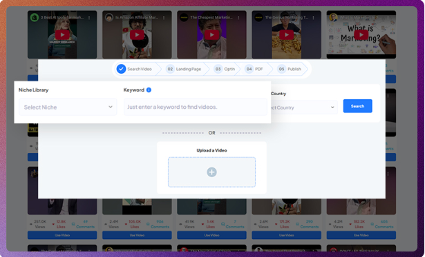
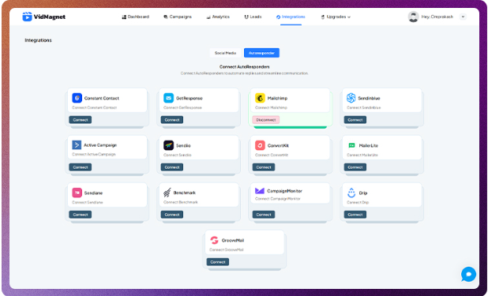
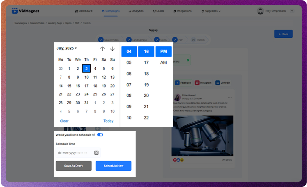
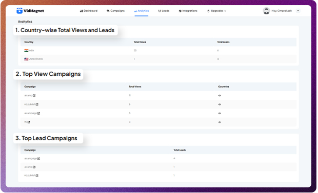

VidMagnet Review: Transform Viral YouTube Videos into Automated Lead Funnels Without Tech Skills
Ever wish you could turn viral YouTube videos into lead-generating machines—without touching a single line of code?
That's exactly what VidMagnet promises to do. This all-in-one AI-powered video funnel builder is quickly becoming a favorite among affiliate marketers, solopreneurs, and even marketing agencies who are tired of clunky, outdated tools. Whether you're new to funnels or tired of overpaying for platforms like Leadpages, VidMagnet might just be the no-tech, done-for-you solution you've been waiting for.
So what makes it stand out? VidMagnet lets you create interactive video funnels using viral content, capture leads in real time, and deploy full campaigns in minutes. No design skills? No problem. The platform is packed with DFY templates, a commercial license, and even white-label options—all hosted in the cloud.
In this VidMagnet review, I'll walk you through how it works, what's included in the VidMagnet OTOs, how it stacks up against other tools like Leadpages, and whether the unlimited upgrade is worth it. Plus, I've got details on the best VidMagnet bonuses and coupon offers you don't want to miss. Let's dive in!
Product Overview
üåü What Is VidMagnet?
VidMagnet is a cloud-based AI video funnel builder that helps users turn viral YouTube videos into fully interactive, lead-generating funnels—without needing any technical or design skills. It's designed for beginners and pros alike, offering a fast, no-code solution to creating powerful marketing funnels from existing video content.
ü߆ Who Created VidMagnet?
VidMagnet was developed by Vivek Gour, a well-known digital marketer and SaaS creator behind several successful product launches in the internet marketing space. His team is known for building tools that are beginner-friendly, highly automated, and focused on helping marketers get real results quickly.
üéØ What Problem Does VidMagnet Solve?
Traditional funnel builders are often expensive, complicated, or require multiple tools to generate leads effectively. VidMagnet solves this by combining AI, viral video content, and automated lead capture into one platform. It eliminates the need for copywriting, design, and manual setup—making it ideal for affiliate marketers, agencies, freelancers, and solopreneurs looking for a shortcut to high-converting funnels.
üí∞ VidMagnet Pricing (As of Launch)
Here's a breakdown of VidMagnet's pricing structure:
- Frontend: VidMagnet Basic — $297 one-time
- OTO 1: VidMagnet Unlimited — Unlock unlimited funnels, leads, and features ($97)
- OTO 2: VidMagnet DFY — Done-for-you templates, campaigns, and content (~$67)
- OTO 3: VidMagnet Automation — Advanced automations, scheduling, and AI triggers (~$47)
- OTO 4: VidMagnet Agency/Commercial License — Sell as a service or to clients (~$67-$97)
- OTO 5: VidMagnet Whitelabel — Rebrand and sell under your own brand (~$197+)
Note: Prices may vary slightly depending on discounts and early-bird deals.
üõí How to Access VidMagnet
VidMagnet is available for purchase via its official launch page through WarriorPlus. Once purchased, users receive instant access to the software via a secure dashboard. There's no installation required—it's 100% cloud-based, so you can log in and start building funnels from any device.
Users also get access to detailed tutorials, support, and any applicable bonuses or coupons offered during the promotional period.
üìò How VidMagnet Works: Step-by-Step Guide
Here’s a detailed walkthrough of how VidMagnet turns viral videos into high-converting lead funnels in just a few clicks:
Step 1: Search Trending Videos by Keyword & Niche
Use VidMagnet’s smart video finder to instantly uncover trending, license-safe YouTube videos in any niche — from fitness to finance. Build commission funnels around videos already pulling millions of views, so you never waste time guessing what your audience wants.
Step 2: Filter Results by Country for Localized Targeting
Want to target a specific country or region? VidMagnet filters viral videos by country, so your funnels match cultural nuances and resonate more powerfully. Tap into locally trending videos to boost engagement, trust, and commission rates in any market you choose.
Step 3: Sort Videos Based on Views, Likes, or Comments
Spot videos with the strongest proof of audience interest by sorting results by real engagement metrics. Find what’s not just popular, but beloved by viewers — so your commission funnels get built around content with a track record of sparking action.
Step 4: Upload Your Own Video
Already have a personal or brand video you want to monetize? Simply upload it, and VidMagnet transforms it into a commission funnel in seconds — complete with optimized layouts, CTAs, and tracking. Perfect for creators, coaches, or businesses wanting to scale fast.
Step 5: Battle-Tested Funnel Templates for Any Niche
Pick from a library of stunning funnel templates optimized for affiliate offers, info-products, ecom promotions, and more. These battle-tested designs are crafted by experts to maximize clicks, engagement, and commissions — even if you’ve never built a funnel before.

Step 6: AI Builds Funnels Based on Video + Niche Selected
Once you pick a viral video and niche, VidMagnet’s AI automatically assembles a complete funnel: headline, subhead, CTA buttons, bridge page, and tracking. In minutes, you get a commission funnel ready to deploy — as if you had a marketing team working behind the scenes.
Step 7: Done-for-You Layouts for Maximum Profits
Every VidMagnet funnel uses mobile-friendly, lightning-fast layouts designed to keep attention and drive clicks. With conversion-tested placements for videos and CTAs, you never have to guess what works — these layouts are optimized to deliver commissions consistently.
Step 8: Fully Hosted Funnels with Built-In CTAs
Forget paying for expensive hosting or complex integrations. VidMagnet hosts every commission funnel for you with secure, lightning-fast servers — so you can start sending viral traffic immediately and tracking clicks and commissions in real time.
Step 9: AI-Generated Bonus Content (eBooks, Checklists, etc.)
Supercharge your funnels with custom bonuses like eBooks, cheat sheets, or checklists created by VidMagnet’s AI. These instant assets add value, build trust, and give visitors an extra incentive to click your links — boosting commissions without extra effort.
Step 10: AutoCopy Genius — Generates Headlines, Hooks & CTAs
VidMagnet’s AutoCopy Genius writes high-converting headlines, persuasive hooks, and irresistible CTAs based on your chosen niche and offer. It’s like having a professional copywriter crafting words that drive clicks and commissions — working for you 24/7 inside your dashboard.
Step 11: AI Writes Video-Based Landing Page Copy for Any Niche
VidMagnet’s AI crafts landing page copy tailored to your niche, matching the emotional drivers that get viewers clicking and buying. Your pages sound like they were written by an expert — even if you have zero copywriting skills.
Step 12: Dynamic Call-to-Action Suggestions Based on Funnel Intent
Not sure which CTA text will drive the most commissions? VidMagnet analyzes your video and niche, then suggests high-converting calls-to-action like “Download Now” or “Claim Your Bonus.” Automated optimization means you never leave potential profits on the table.
Step 13: Built-in Autoresponder Integration
Seamlessly connect VidMagnet with your favorite autoresponders — or export leads if you prefer. Once someone opts in through your funnel, they’re instantly added to your list, letting you follow up and maximize commissions without manual steps.
Step 14: Instant Lead Capture & Downloadable Delivery Pages
VidMagnet creates fully hosted delivery pages for your bonuses or resources — perfect for affiliate promos needing gated content. Visitors see a professional download area that builds trust and boosts clicks on your offers.
Step 15: Export CSV or Auto-Add to Your CRM or Email Tool
Store your leads securely inside VidMagnet or push them directly to your CRM or email software. Ideal for agencies managing multiple clients or marketers building segmented lists across different campaigns.
Step 16: AI-Generated Social Media Posts Tied to Each Funnel
VidMagnet doesn’t stop at your funnel — it writes ready-to-post social media content with headlines, hooks, and emojis, all optimized for your niche. Promote your commission funnels instantly on every major platform.
Step 17: Supports Facebook, LinkedIn, and Instagram Formats
Your social posts are formatted automatically for Facebook, LinkedIn, and Instagram — including previews, link placements, and hashtags. Save hours by letting VidMagnet handle post design for every platform.
Step 18: Pre-Filled Captions, Hashtags & Image Prompts
VidMagnet generates complete social post captions plus suggested hashtags and image prompts. Even if you’ve never written social copy, your funnels will have attention-grabbing promotions ready to share.
Step 19: Schedule Your Posts Directly from VidMagnet
No need to log into each platform or hire a VA — queue up posts for days or weeks in advance. Keep your funnels working and commissions rolling in hands-free.
Step 20: Time-Based Smart Scheduling for Optimal Traffic
VidMagnet recommends the best times to post based on real-world engagement trends. Schedule posts to go live when your audience is most active — even while you’re asleep.
Step 21: Real-Time Analytics Dashboard (Views, Clicks, Conversions)
Track your funnel’s performance instantly: see page views, CTA clicks, opt-ins, social shares, and commission-generating actions. Know exactly what’s working so you can scale your best campaigns.
Step 22: Performance Reports for Each Funnel & Traffic Source
VidMagnet gives you funnel-specific and platform-specific performance reports, so you can identify which videos and sources bring the highest ROI. Ideal for refining strategies and maximizing commissions.
Step 23: Beginner-Friendly UI with No Learning Curve
VidMagnet is built for non-techies: just point, click, and launch. No confusing jargon or coding needed — anyone can start building commission funnels in minutes.
Step 24: Works Across Platforms & Business Models
Whether you promote affiliate products, ecom offers, or digital services, VidMagnet fits your strategy perfectly. It’s platform-agnostic, niche-flexible, and designed for real-world marketers chasing real profits.
Key Features
üîë Key Features of VidMagnet (With Real-World Use Cases)
1. Interactive Video Funnel Builder
What It Does:
Lets you turn any YouTube video—especially viral ones—into a fully interactive funnel. You can embed opt-in forms, call-to-actions, countdown timers, and clickable elements directly into the video.
Benefits:
Keeps viewers engaged while collecting leads, boosting conversions without needing a traditional landing page.
Limitations:
Only works with publicly available YouTube videos; no support for Vimeo or private video hosting (as of now).
Use Case:
A fitness affiliate takes a viral "home workout" video, adds an opt-in form offering a free diet plan, and captures leads right from the video itself.
2. AI-Powered Funnel Creation
What It Does:
Uses built-in AI to generate funnel layouts, opt-in copy, and call-to-action suggestions based on your niche and offer.
Benefits:
Saves hours of manual funnel building, especially helpful for beginners or solo marketers.
Limitations:
AI suggestions may require tweaking for tone, branding, or compliance.
Use Case:
A freelancer promoting an ebook uses VidMagnet's AI to auto-generate a video funnel, complete with a lead magnet headline, opt-in form, and thank-you page.
3. Done-for-You Funnel Templates
What It Does:
Comes preloaded with high-converting funnel templates designed for various niches (fitness, make money online, local business, etc.).
Benefits:
Instant setup—just plug in your video, tweak the content, and launch. Great for those with no design experience.
Limitations:
Templates may feel "cookie-cutter" without customization; not all niches may be covered.
Use Case:
A digital marketing agency repurposes a DFY template to promote a client's webinar using an engaging YouTube teaser video.
4. Built-in Lead Capture and Autoresponder Integration
What It Does:
Captures leads directly within the video and integrates with major email marketing platforms (like GetResponse, Mailchimp, etc.).
Benefits:
No need for external tools or landing pages; leads go straight into your email list for follow-up.
Limitations:
Some lesser-known autoresponders may not be supported natively—manual integration may be needed.
Use Case:
An affiliate marketer connects VidMagnet to their ConvertKit account and starts growing a list with viral recipe videos offering a free cookbook download.
5. Commercial & Whitelabel Rights (Optional Upgrades)
What It Does:
Commercial rights let you use VidMagnet for client projects, while the whitelabel upgrade allows full rebranding.
Benefits:
Adds a revenue stream—build and sell funnels as a service or resell the software under your own brand.
Limitations:
Available only through higher-tier OTOs; may not be suitable for casual users.
Use Case:
A small agency rebrands VidMagnet and offers "custom video funnel creation" packages to local businesses and YouTubers.
6. Cloud-Based Dashboard with No Installation
What It Does:
Entire software runs in the cloud—nothing to install or update. Access from any device, anytime.
Benefits:
Ideal for mobile marketers, agencies on the go, and users with low-spec devices.
Limitations:
Requires a stable internet connection to use effectively.
Use Case:
A digital nomad creates video funnels for affiliate products while traveling, using only a tablet and browser.
These features together make VidMagnet one of the most versatile and beginner-friendly tools for anyone wanting to leverage viral video content to capture leads—without the usual tech hassles.
User Experience
ü뮂Äçüíª User Experience with VidMagnet
üß© Learning Curve
VidMagnet is designed with beginners in mind, so the learning curve is quite low. If you've ever used a drag-and-drop builder or watched a YouTube video, you'll feel right at home. Most users can launch their first interactive funnel in under 30 minutes. The AI assistance and done-for-you templates make it easy to get started—even if you've never built a funnel before.
üñ• Interface Analysis
The dashboard is clean and straightforward. Everything is laid out logically, with large buttons and clear labels. The video editor is intuitive: you simply paste a YouTube link, and the customization panel opens where you can add lead forms, CTAs, and other elements. There's very little clutter, which makes it friendly for users who don't like overly complex interfaces.
üöÄ Onboarding Process
The onboarding is simple and fast. After your purchase, you'll receive login details via email. Once inside, VidMagnet walks you through a brief setup tour, and a few short tutorial videos explain the basics—like how to create your first funnel, connect your autoresponder, and access your templates. You can skip or revisit these anytime.
üõ† Required Technical Knowledge
No coding or tech skills are needed. VidMagnet is fully no-code and ideal for solopreneurs, affiliate marketers, or freelancers who want results without hiring a web developer or learning design tools. If you can copy and paste, drag and drop, and follow basic instructions, you can use this platform with ease.
üìû Support Options
VidMagnet offers multiple support channels:
- A searchable knowledge base with articles and how-to guides.
- Video tutorials for visual learners.
- Email ticket support for direct help.
- Occasionally, a private Facebook group or live chat may be offered during launch weeks for community-based assistance and faster responses.
Overall, VidMagnet delivers a beginner-friendly user experience backed by helpful support and minimal tech headaches.
Pros and Cons
✅ Pros and ❌ Cons of VidMagnet
✅ Pros
- Beginner-Friendly and No-Code
VidMagnet requires zero tech skills, making it ideal for marketers, freelancers, and business owners who want fast results without complicated tools. - Turns Viral Videos Into Lead Funnels
Users can legally repurpose YouTube videos and add interactive lead-capture elements—no need to create content from scratch. - AI-Assisted Funnel Building
Built-in AI generates funnel copy and layout suggestions, helping users save time and improve conversions without hiring a copywriter. - Done-For-You Templates for Multiple Niches
Pre-designed funnel templates let users launch campaigns quickly, whether they're in fitness, marketing, coaching, or eCommerce. - Email Marketing Integrations
Seamlessly integrates with popular autoresponders like Mailchimp, GetResponse, and ConvertKit to streamline lead management. - Commercial License Available
Upgrade options allow users to build funnels for clients or sell funnel services, making it a strong tool for agencies and freelancers. - Cloud-Based with Nothing to Install
Works on any device with internet access, so users can manage campaigns on the go.
❌ Cons
- Limited to YouTube Videos
Currently, VidMagnet only supports YouTube videos—no support for Vimeo, Facebook videos, or uploaded MP4s. - Some Templates Feel Generic
While useful, the DFY templates may require customization to avoid looking cookie-cutter or overused. - Autoresponder Support May Be Limited
Only major email platforms are integrated—connecting lesser-known or custom CRMs may require manual workarounds. - Upsells Add Key Features
The full potential of VidMagnet (like unlimited funnels, automation, or whitelabel rights) is locked behind optional upgrades (OTOs), which may increase the cost for serious users. - Requires Internet to Function
As a fully cloud-based app, it doesn't work offline—so a stable connection is essential for access and editing.
VidMagnet offers a smart, accessible way to build video-based lead funnels—especially for marketers who want fast, effective tools without the tech headache. Just be aware of its platform limits and upsell-driven model.
Comparison with Alternatives
üîç VidMagnet vs Competitors: How Does It Stack Up?
When it comes to building lead funnels—especially video-based ones—VidMagnet enters a competitive space with some solid alternatives. Let's compare it to a few key players:
ü•á 1. VidMagnet vs Leadpages
Features:
- Leadpages is a powerful landing page builder with deep integrations, A/B testing, and advanced customization.
- VidMagnet focuses on turning YouTube videos into interactive lead funnels, using AI and viral content as a unique angle.
Pricing:
- Leadpages starts at ~$49/month (no lifetime option).
- VidMagnet is available for a one-time fee ($297, with OTOs for more features).
When to Choose:
- Choose Leadpages if you want traditional, static landing pages with deep testing features.
- Choose VidMagnet if you want to repurpose viral videos into funnels and need a faster, more visual approach.
ü•à 2. VidMagnet vs Systeme.io
Features:
- Systeme.io is an all-in-one business platform with email marketing, course hosting, sales funnels, and automations.
- VidMagnet is laser-focused on video-based lead generation using YouTube + AI.
Pricing:
- Systeme.io has a free tier, with paid plans starting around $27/month.
- VidMagnet charges a one-time fee for the core software, with optional upgrades.
When to Choose:
- Go with Systeme.io if you need an all-around business tool for email, products, and digital sales.
- Choose VidMagnet if you're specifically looking to generate leads from video content with zero design work.
ü•â 3. VidMagnet vs InVideo AI (or Pictory)
Features:
- Tools like InVideo AI or Pictory focus on video creation and editing, often turning text or blog posts into videos.
- VidMagnet focuses on using existing YouTube videos to build interactive lead funnels—not creating videos from scratch.
Pricing:
- InVideo AI/Pictory typically start at ~$19 to $39/month.
- VidMagnet's pricing is a one-time investment, making it more budget-friendly for solopreneurs.
When to Choose:
- Use Pictory or InVideo AI if your priority is video creation and editing.
- Use VidMagnet if your focus is on turning videos into automated, lead-generating funnels.
üåü Unique Advantages of VidMagnet
- Uses viral YouTube videos legally for lead gen.
- AI-powered funnel creation with minimal effort.
- Interactive in-video lead capture.
- Affordable one-time pricing.
- No tech, no design, no content creation required.
ü߆ Final Take
- Choose VidMagnet if you want to quickly build engaging funnels using video content without needing your own videos, coding skills, or a big budget.
- Choose Leadpages for advanced, traditional landing pages with full analytics.
- Choose Systeme.io if you're building a complete online business with products, emails, and automation in one place.
- Choose InVideo AI/Pictory if your focus is on creating engaging video content, not funnelizing it.
VidMagnet fills a smart, time-saving niche for modern marketers who want to use content that's already performing to generate leads fast.
❓ Frequently Asked Questions (FAQs):
Can I legally use other people's YouTube videos?
Yes, VidMagnet only uses Creative Commons licensed videos for legal repurposing.
Does VidMagnet require any technical or design skills?
No, it's fully beginner-friendly with prebuilt templates and drag-and-drop tools.
How fast can I set up my first funnel?
Most users can have a live funnel running within 30 minutes or less.
Is hosting included, or do I need a website/domain?
Hosting is included—no extra hosting or domain required.
Will my funnels integrate with email autoresponders?
Yes, VidMagnet supports integration with major email autoresponders.
Is this a one-time purchase or subscription?
It's a one-time purchase. No monthly fees for the front-end version.
Can I use it to sell to clients (commercial use)?
Yes, the commercial license is included with the front-end offer.
What is the refund policy?
There is no stated refund policy for the front-end; current data shows a 0% refund rate.
Conclusion
üèÅ Final Verdict: Is VidMagnet Worth It?
After testing and digging deep into VidMagnet, here's what stands out: it's a smart, beginner-friendly tool that lets you transform viral YouTube videos into lead-generating funnels—with no design, coding, or content creation needed. From AI-powered funnel building to built-in lead capture and DFY templates, VidMagnet takes a lot of the heavy lifting out of online marketing.
Yes, it has some limitations—like being YouTube-only and offering its best features through upsells—but the one-time pricing, ease of use, and practical features make it a fantastic value, especially for affiliate marketers, freelancers, solopreneurs, and agencies looking for a fast, no-fuss solution to capture leads and grow their lists.
üí° Final Recommendation:
If you're looking for a simple, affordable, and innovative way to build video funnels without the tech headache, VidMagnet is 100% worth considering. It's not just another funnel builder—it's a time-saving